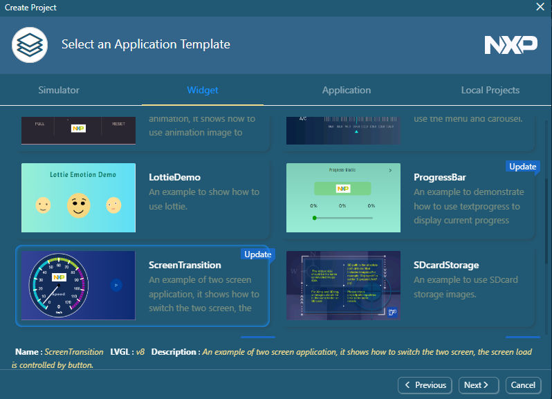

Note: Alternatively, you can select File > New in the GUI editor.
The New Project wizard dialog box appears.
Select the LVGL version that you want to use. For example, v8.
Click Next or double click.
The Select a Board Template page of the wizard appears.
Click the Simulator, i.MXRT, or LPC tab and select a board from the template list. For example, select MIMXRT1050-EVKB. Click Next or double click.
Click Next or double click.
The Select an Application Template appears.
Select a GUI application template. For example, click the Widget tab and select ScreenTransition.
Figure: Select a GUI application template

Click Next or double click.
The Project Settings page appears.
Configure the basic information of the project, including Project Name, Project Directory, Panel Type, Color Depth, and GUI Resize. Then click Create.
Note: To ensure that the GUI application is displayed normally on the board, select Auto Ratio. To customize the size of the application display, set the scaling ratio of width and height in the custom ratio.
Note: GUI Guider supports multiple panel types for each board. The new panel is selected by default. Check the display type on your board and select the right panel type.